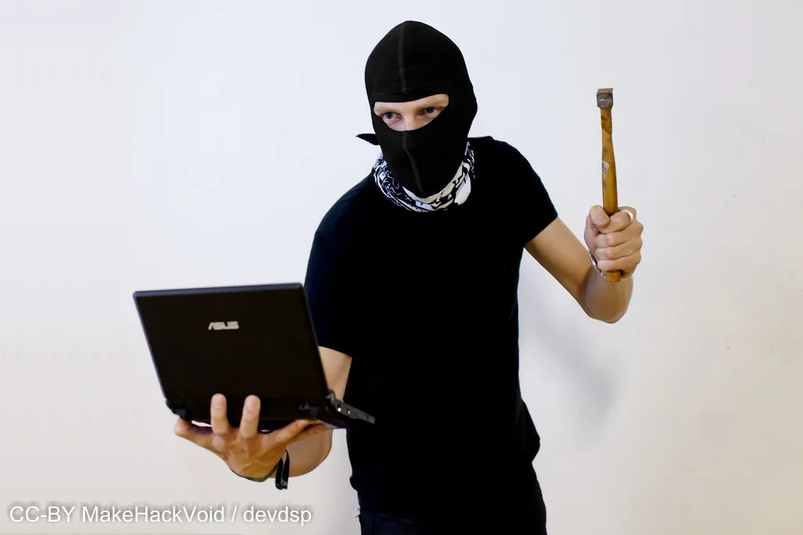

세계 최대 가상자산 거래소 바이낸스에서 발생한 대규모 해킹 사건의 배후로 미국이 북한을 지목한 데 대해, 북한 노동당 고위 간부인 김여정이 직접 나서 이를 전면 부인했다. 김여정은 미국 측의 주장을 "터무니없는 수사"라며 강하게 반박하고, 이를 "정치적 도발"로 규정했다. 북한의 최고위급 인사가 특정 해킹 사건에 대해 이처럼 직접적이고 신속하게 반응한 것은 이례적이라는 평가가 나온다.
사건의 출발점은 지난달 10월 29일 바이낸스에서 발생한 대규모 가상자산 유출이다. 미국 연방수사국(FBI)은 이번 해킹으로 60억 달러, 우리 돈으로 약 8조 원 이상의 가상자산이 탈취됐다고 밝히고, 그 배후로 북한 정찰총국 산하 해킹 조직으로 알려진 '트레이더트레이터'를 지목했다. FBI는 해당 조직이 정교한 기술적 수법을 동원해 거래소 시스템에 침투한 것으로 보고 있다고 설명했다.
북한은 그동안 비슷한 해킹 의혹이 제기될 때마다 외무성 등 실무 기관 차원에서 부인하는 선에서 대응해온 경우가 많았다. 그러나 이번에는 대미·대남 메시지를 전담하는 최고위급 인사인 김여정이 직접 반박에 나섰다는 점에서 이전과는 결이 다르다는 분석이 제기된다. 전문가들은 이를 두고 북한이 이번 사안을 단순한 해킹 의혹이 아니라 북미 관계 전반에 영향을 줄 수 있는 민감한 외교 현안으로 받아들이고 있다는 신호로 해석한다.
특히 이번 반박이 북미 간 대화 가능성이 거론되는 시점에 나왔다는 점도 주목받는다. 일부 외교가 관측통들은 북한이 대규모 해킹의 배후로 지목되는 상황이 향후 북미 협상 테이블에 부담으로 작용할 수 있다고 보고, 이를 사전에 차단하려는 전략적 메시지 관리 차원의 대응이라는 분석을 내놓고 있다. 다만 이는 정황에 기반한 해석으로, 북한의 실제 의도를 단정하기는 어렵다.

미국 정부는 북한의 부인에도 기존 입장을 바꾸지 않고 있다. 미 당국은 북한의 사이버 범죄가 특정 거래소 한 곳에 국한된 문제가 아니라 전 세계적인 금융 안보를 위협하는 사안이라는 점을 강조하며, 북한의 반박을 사실상 받아들이지 않겠다는 입장을 재확인했다. 이에 따라 양측의 공식 입장이 정면으로 충돌하는 양상이 당분간 이어질 것으로 보인다.
국제 가상자산 업계에서는 이번 사건을 계기로 거래소 보안 체계에 대한 점검 필요성이 다시 부각되고 있다. 북한 연계 해킹 조직이 올해 들어 여러 차례 대형 거래소를 겨냥한 공격을 시도해온 것으로 알려진 만큼, 유사한 피해가 재발하지 않도록 거래소 차원의 보안 투자와 국제 공조가 강화돼야 한다는 목소리가 커지고 있다. 일부 보안 전문가들은 탈취된 자산의 세탁 경로를 추적하는 국제 공동 수사가 함께 이뤄져야 재발을 막을 수 있다고 지적한다.
이번 공방이 북미 관계에 실질적으로 어떤 영향을 줄지는 아직 가늠하기 어렵다는 전망이 많다. 다만 북한의 이례적으로 신속하고 강경한 대응이 향후 양측의 외교적 셈법에 어떤 변수로 작용할지, 그리고 미국이 추가 제재나 조치로 대응할지 여부에 국제사회의 관심이 이어지고 있다. 당장 추가 공식 발표가 나오지는 않았지만, 양측이 각자의 입장을 거듭 밝히는 과정에서 긴장이 더 고조될 가능성도 배제할 수 없다는 분석이다.